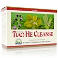
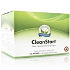
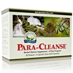
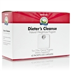

HERBS for THOUGHT
CLEAN YOUR INTERNAL HOUSE,
IT IS IMPORTANT TO YOUR WELL BEING.
HYGEINE ISNT ONLY ON THE OUTSIDE;
IT IS TAKING CARE OF THE INSIDE TO.
There are a selection of cleanses we offer, however, let us talk briefly about cleansing, its purpose and what it can do for you:
Most of us think about hygiene as taking a shower, brushing our teeth, combing our hair, even vacuuming the rug, doing the dishes, washing our car; however, do we ever think about keeping things running efficient on the inside? Just like a well lubed car, if you don’t drain the dirty oil and put in fresh clean oil the cars engine cannot run efficiently and will lock up; our bodies will do the same over time. Our body is like a furnace that needs good fuel to burn. If garbage is put in for a period of time, it no longer runs at optimum levels and instead is bogged down and sick and tired. As we put in our bodies fats, carcinogens, anti-biotics, preservatives, additives, substances that turn into toxic waste, the body has to store it somewhere and that is in fat pockets that can eventually become cysts, boils, and tumors. Detoxing the body through a cleanse can purge toxic waste from your liver, colon and down to the cellular level freeing up the body from the waste it was swimming in to now gain energy, loose weight, eliminate bowels properly and feel GREAT.
CLEANSE OPTIONS:
Tiao He Cleanse
A 10-day nutritional program designed to help the body achieve balance and harmony. It combines Chinese nutritional and Western herbal experience. The Tiao He Cleanse is designed to support the cleansing mechanisms of the body by targeting the intestinal, digestive and circulatory systems. So, you say, just what results can I expect from the Tiao He Cleanse? The cleanse often yields results of glowing skin, weight loss, flattened tummy, regularity in bowl movements, energy, restful sleep, mood elevation, symptomatic relief, many symptoms simply disappear after doing the Tiao He Cleanse and one feels fabulous.
BENEFITS:
- Supports the intestinal system.
- Supports intestinal regularity.
- May improve energy and well-being.
Clean Start
CleanStart is a two-week program that supports natural waste elimination to provide a sense of improved energy and well-being. It contains powerful nutrients that help cleanse and detoxify the body.
BENEFITS:
- Supports the natural, everyday cleansing of toxic waste from the body.
- Works without posing dangerous side effects.
- Improves energy and promotes a feeling of well-being.
Para Cleanse
The herbs in Para-Cleanse work synergistically to create an environment that supports the health and viability of “healthy” microorganisms, also known as intestinal flora. These include NSP’s Black Walnut ATC Concentrate, Paw Paw Cell-Reg, which helps the body’s natural cleansing process, Herbal Pumpkin Formula and Artemisia Combination. These formulas help make the intestines inhospitable to foreign invaders, help remove debris and lubricate the colon to optimize intestinal function.
BENEFITS:
- Is safe, natural, gentle and effective.
- Cleanses and detoxifies.
- Comes in convenient individual serving packets.
Dieters Cleanse
Proper cleansing of the digestive tract allows for better elimination of waste and improved absorption of nutrients from the food you eat. Dieter’s Cleanse is a safe, simple, convenient cleansing program. Product elements provide dietary fiber, support the production of digestive enzymes and bile, nourish the liver and glandular system, promote detoxification and support the body’s weight-management mechanisms. Kick off your weight-loss program by using Dieter’s Cleanse for one week.
BENEFITS:
- Promotes natural, healthy elimination.
- Supports normal glandular function.
- Supports the liver and digestive system.
- May help maximize the nutritional benefit from the food you eat.
Personalized Cleanse
Herbs for Thought works one on one to personalize a cleanse that is geared to work on specific needs for an individual.
Check out Herbs for Thought Philosophy on Practices to get the most out of what we offer
I am available to consult about one’s personal needs in terms of which cleanse to
choose and other benefits one can do to achieve their goals.
Call for an appointment, stop in, message me or email @ Shelley@HerbsforThought.com
about your personal needs to get started now.